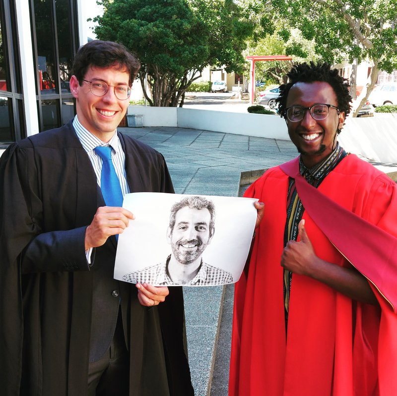

‘Life is a happenstance of uncoordinated decisions’
Serendipity is underrated.
The PhD studies of the first student to study under my supervision, Jeanne Cilliers, began with one such serendipitous moment: I opened a printed newspaper, a rare occurrence even then, only to notice an advertisement for a genealogical dataset. I followed it up, and gained access to what later became South African Families. Jeanne then did the unglamorous work: she cleaned, checked, and rebuilt the data, day after day, and turned it into evidence on how economic incentives shaped South Africa’s demographic transition.
Those moments of serendipity are everywhere. By the time Abel Gwaindepi completed his PhD, as I explain in a post I wrote in 2018, he had already taken advantage of many such moments.
Another characteristic these stories share is grit. Many see a PhD as a grand project, requiring a grand vision. Students arrive thinking they need a five-year plan. In my experience, though, grand visions or plans are not the binding constraints to success. The binding constraint is whether the student can keep moving through uncertainty or, put simply, to shake off whatever holds them back and just keep walking. Take Karl Bergemann. In the piece I wrote after his graduation, I describe how, despite many challenges, Karl simply pushed through to get things done.

Supervision teaches another lesson that is easy to forget in a profession that celebrates individual brilliance. Research is rarely a solitary achievement. It is made in company, through support, feedback, co-authorship. In the papers I published between 2019 and 2025, I’ve had more than 40 co-authors. Teamwork not only gets stuff done, but it makes life fun and interesting. Research can be lonely and disheartening, which is why collaboration matters.
That is why I’ve been particularly keen in recent years to recruit postdoctoral fellows. They bring momentum: they can take a promising dataset or half-built idea and turn it into a paper before the energy dissipates. They raise the ambition of the group while lowering the loneliness of the work. They also help build capacity in the only durable way I know: by working alongside students, sharing routines, and turning supervision from a one-to-one relationship into a small research community.
Supervising students has been one of the great privileges of my academic life. But it also reminds me that we are all students, all the time. Many teachers and colleagues have been signposts on my own long walk. I want to acknowledge a few who have had a particularly important impact: Jan Luiten van Zanden, Price Fishback, Kris Inwood, James Robinson, Anne McCants, Stan du Plessis, and Tony Hopkins.
PhDs
| Student | Year completed | Nationality (ISO) | Co-supervisor(s) | Dissertation title | Where they are now |
|---|---|---|---|---|---|
| Jeanne Cilliers | 2016 | ZA | – | A demographic history of settler South Africa | Department of Economic History, Lund University |
| Christie Swanepoel | 2017 | ZA | – | The private credit market of the Cape Colony, 1673–1834: wealth, property rights, and social networks | Department of Economics, University of the Western Cape |
| Abel Gwaindepi | 2018 | ZW | Krige Siebrits; Leigh Gardner | State building in the colonial era: public revenue, expenditure and borrowing patterns in the Cape Colony, 1820–1910 | University of Copenhagen, Centre for African Studies |
| Farai Nyika | 2021 | ZW | – | Early effects and legacies of Cape Colony legislation on black disenfranchisement, education and migration | School of Business, MANCOSA |
| Calumet Links | 2021 | ZA | Dieter von Fintel; Erik Green | The economic impact of the Khoe on the north-eastern frontier of the Cape Colony | Department of Economics, Stellenbosch University |
| Lloyd Maphosa | 2021 | ZW | Anton Ehlers; Edward Kerby | A historical analysis of joint stock companies in the Cape Colony between 1892 and 1902 | Queen’s Business School, Queen’s University Belfast |
| Amy Rommelspacher | 2022 | ZA | Vivian Bickford-Smith; Kris Inwood | Work, wedlock and widows: comparing the lives of coloured and white women in Cape Town, 1900–1960 | DRC Archives, Stellenbosch |
| Karl Bergemann | 2024 | ZA | Kate Ekama; Laura Mitchell | The runaways: a study of enslaved, apprenticed and indentured labour flight at the Cape in the emancipation era, 1830–42 | Department of History, Utrecht University |
| Munashe Chideya | 2024 | ZW | Edward Kerby | Private joint-stock companies and government relations in the Cape Colony, 1892–1902 | Department of Economics, Stellenbosch University |
| Lisa-Cheree Martin | 2025 | ZA | – | Life after slavery: investigations into self-selection and social mobility | Department of Economics, Stellenbosch University |
| Tim Ngalande | 2026 | MW | – | Growth, Productivity, Labour Misallocation, and the Paradox of Apartheid in 20th Century South Africa | UCT J-PAL |
Postdocs
| Name | Period | University recruited from | University placed to |
|---|---|---|---|
| Francisco Gracia | 2018–2019 | University of Zaragoza | University of Zaragoza |
| Young-ook Jang | 2019 | LSE | Korea Institute for International Economic Policy |
| Kate Ekama | 2019–2025 | Leiden University | Stellenbosch University |
| Elie Murard | 2019–2020 | University of Cape Town | University of Alicante |
| Kara Dimitruk | 2019–2022 | UC Irvine | Swarthmore College |
| Leone Walters | 2021–2023 | University of Pretoria | University of Cape Town |
| Jonathan Schoots | 2022–2024 | University of Chicago | Lund University |
| Este Kotze | 2023–2024 | Stellenbosch University | Stellenbosch University |
| Gabriel Brown | 2024–2026 | UBC | – |